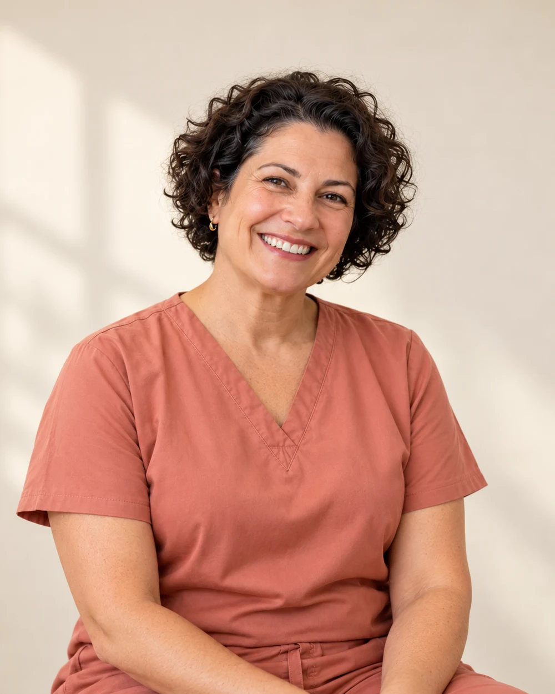
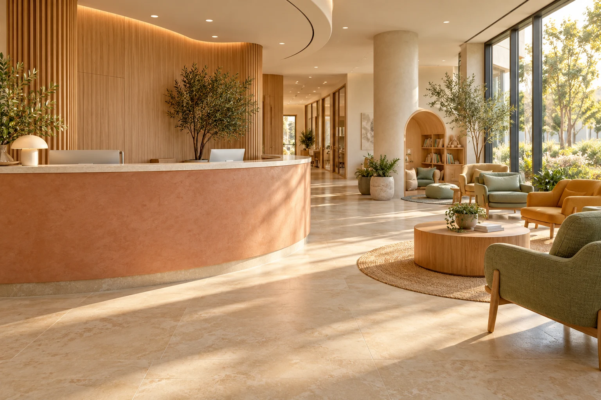

Взрослым
Когда хочется
разобраться.
Консультация терапевта — спокойный разговор о вашем самочувствии, имеющихся исследованиях и следующих шагах.
Выбрать времяВзрослым
Консультация терапевта — спокойный разговор о вашем самочувствии, имеющихся исследованиях и следующих шагах.
Выбрать время
Пример услуг для концепта.
Уточнения — до начала визита.
Знакомство, обсуждение запроса, осмотр и план дальнейших действий.
Обсуждение изменений и вопросов по ранее согласованному плану.
Обсуждение имеющихся исследований в контексте вашего здоровья.

Перед встречей
Возьмите имеющиеся выписки и результаты, если они есть. Запишите вопросы, которые не хочется забыть. Необходимость дополнительных исследований обсуждается с врачом.
На приёме можно попросить повторить объяснение, уточнить стоимость или порядок следующего шага. Это нормальная часть разговора.
Памятка первого визита